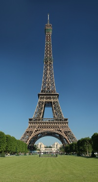

The Eiffel Tower
The Eiffel Tower (French: La Tour Eiffel, nickname La dame de fer, the iron lady) is an iron lattice tower located on the Champ de Mars in Paris. Built in 1889, it has become both a global icon of France and one of the most recognizable structures in the world. The tower is the tallest building in Paris and the most-visited paid monument in the world; millions of people ascend it every year. Named for its designer, engineer Gustave Eiffel, the tower was built as the entrance arch to the 1889 World's Fair.
The tower stands 324 metres (1,063 ft) tall, about the same height as an 81-storey building. Upon its completion, it surpassed the Washington Monument to assume the title of tallest man-made structure in the world, a title it held for 41 years, until the Chrysler Building in New York City was built in 1930. Not including broadcast antennas, it is the second-tallest structure in France after the 2004 Millau Viaduct.
The tower has three levels for visitors. Tickets can be purchased to ascend, by stairs or lift, to the first and second levels. The walk to the first level is over 300 steps, as is the walk from the first to the second level. The third and highest level is accessible only by elevator. Both the first and second levels feature restaurants.
The tower has become the most prominent symbol of both Paris and France, often in the establishing shot of films set in the city.